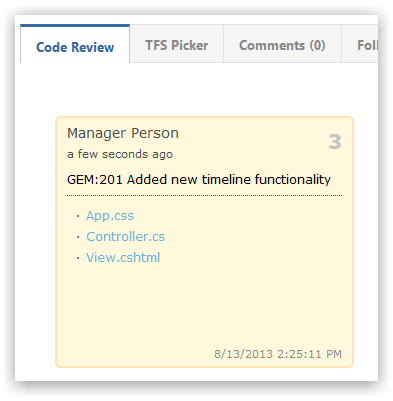

The Saucery app for Gemini provides File Association and Code Review capabilities for popular Source Control systems.
| System | File Association | Code Review |
|---|---|---|
| GitHub | Yes | Yes |
| Bitbucket | Yes | Yes |
| Mercurial | Yes | |
| Subversion | Yes | Yes |
| Tortoise SVN | Yes | Yes |
| Git | Yes | |
| Microsoft Team Foundation Server 2010 | Yes | Yes |
| Microsoft Team Foundation Server 2012 | Yes | Yes |
NoteRemainder of this section assumes the Gemini Administrator has already configured the Source Control system
Ensure that Code Review is enabled for those processes that you wish to associate with Source Control (e.g. bug).
Select the screen option for the item you want to attach Code Review.
Verify by opening an item to see the Code Review section:
When commiting files provide a Gemini item number within the commit Comment.
NoteThe "GEM:" prefix is mandatory and you can specify multiple Gemini items by comma-separating them
You will see the commit message and associated files in the Code Review section of the item.

When commiting files provide a Gemini item number either within the commit Comment or using the Gemini box top-right.
NoteThe "GEM:" prefix is mandatory and you can specify multiple Gemini items by comma-separating them
You will see the commit message and associated files in the Code Review section of the item.
When commiting files provide a Gemini item number within the commit Comment.

NoteThe "GEM:" prefix is mandatory and you can specify multiple Gemini items by comma-separating them
You will see the commit message and associated files in the Code Review section of the item.